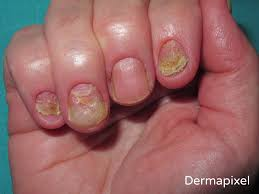

Estas son algunas de las enfermedades o afección más comunes en las uñas:

Estas son algunas de las enfermedades o afección más comunes en las uñas:
Se produce cuando una parte de la uña se clava en el dedo. Produciendo dolor, enrojecimiento
e inflamación, e incluso en algunas ocasiones hasta infección. Puede ser causada por diferentes motivos como
usar zapatos demasiado estrechos o cortarse las uñas demasiado. El tratamiento a seguir depende del grado. Es
decir, a veces puede ser necesario levantar la uña y colocar un algodón debajo o una venda. Otras veces incluso
una férula de canalización.
Uñas blandas, débiles y quebradizas. Es uno de los motivos más frecuentes por lo que los pacientes acuden al
médico por problemas en las uñas. Puede deberse a diversas enfermedades o afecciones. Una causa muy común es la
falta de nutrientes y por consiguiente, la falta de determinadas vitaminas. También puede deberse al contacto
con productos químicos. Otros motivos frecuentes son los cambios hormonales e incluso enfermedades como el
estrés o el hipertiroidismo, entre otras. El tratamiento que se debe seguir depende de la causa. Aunque es común
la recomendación de usar endurecedores.
Se llama así al hábito que tienen muchas personas de morderse las uñas. Aunque se crea que solo es
un problema que afecta a la estética, también puede conllevar problemas de salud. Por ejemplo, infecciones,
problemas dentales e incluso la pérdida de la uña. La causa de morderse las uñas está relacionada principalmente
con problemas como la ansiedad o el estrés. Incluso de inseguridad y nerviosismo. Por estos motivos y porque es
beneficioso para nuestro estado emocional en general, es recomendable acudir a terapia para tratar los
trastornos que acaban en onicofagia. Además, hay pequeños trucos que se pueden aplicar de forma paralela en el
día a día. Hacerse la manicura, usar guantes, dejarse las uñas cortas o hacer deporte para canalizar el estrés,
entre muchos otros.

Más conocido como hongos en las uñas. Es una enfermedad infecciosa que puede afectar tanto a las
uñas de las manos como de los pies. Los síntomas más frecuentes son la deformidad, engrosamiento, decoloración,
fragilidad e incluso mal olor. Normalmente su tratamiento consiste en medicamentos que ayuden a que crezca una
nueva uña sin infección para reemplazar a la anterior.
Psoriasis ungueal. La psoriasis es una enfermedad autoinflamatoria de la piel que puede perjudicar a diferentes
partes del cuerpo. En el caso de las uñas se presenta alterando la estructura de la uña. Esto quiere decir que
provoca fragilidad, inestabilidad y separación de la uña del lecho ungueal. Normalmente con un tratamiento
tópico local o con un tratamiento sistémico sirve para regenerar la uña.
